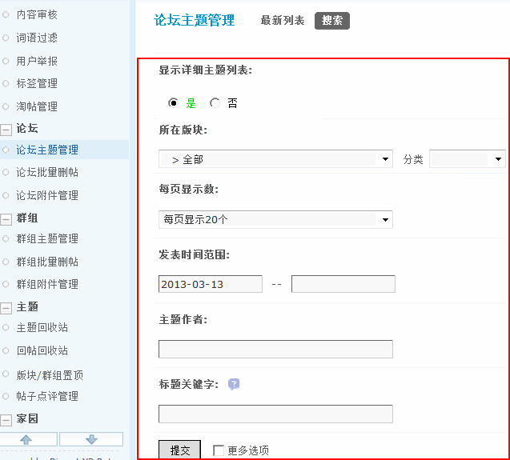
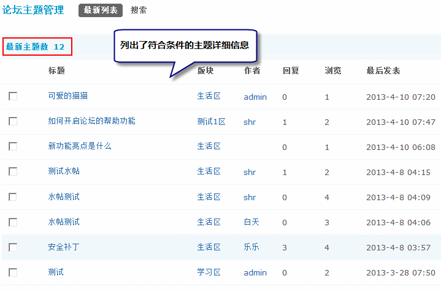
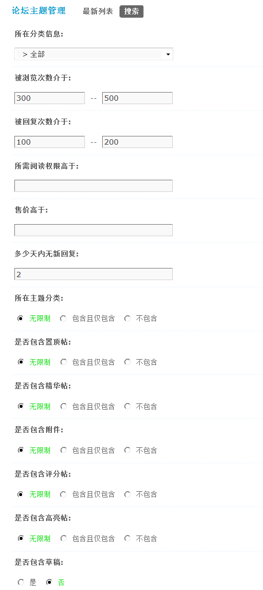
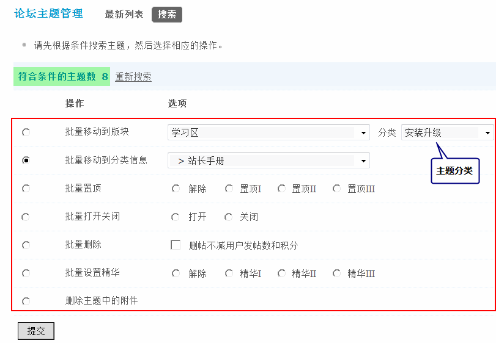

论坛主题管理
该功能主要用于对论坛主题的管理工作，搜索出符合一定条件的主题，然后进行批量的操作。包括：批量移动到版块、批量移动到分类、批量置顶、批量打开关闭、批量删除、批量设置精华、删除主题中的附件。下面主要介绍一下这个功能的使用方法。
一、搜索符合条件主题
操作路径：【后台】=>【内容】=>【论坛主题管理】
管理员可以设置搜索条件，划定搜索范围，如下图所示：
1、显示详细主题列表： 选择“是”，则在搜索结果中列出符合条件的主题详细信息；选择“否”，则只会在结果中显示出符合条件的主题数量。
选择“是”的效果如下：
2、所在版块：按照主题所在的版块进行搜索。
3、分类：按照主题分类进行搜索。
4、每页显示数：每页显示多少帖子，分别可选择20个、50个和100个。
5、发表时间范围：按照主题发表的时间范围进行搜索，格式如2012-01-10–2012-02-10。
5、主题作者：按照主题的作者进行搜索。
6、标题关键字：按照帖子标题所含关键字进行搜索。
勾选“更多选项”，可以列出更多条件供选择，如下图所示：
1、所在分类信息：按照帖子的分类信息进行搜索，可用于只搜索某一分类下的帖子。
2、被浏览次数介于：按照帖子被浏览的次数进行搜索，可用于搜索某些用户比较感兴趣的帖子，如浏览数超过300的帖子。
3、被回复次数介于：按照帖子被回复的次数进行搜索，可用于搜索某些热门的帖子，如回复数大于100的帖子。
4、所需阅读权限高于：按照帖子的阅读权限进行搜索，可用于搜索会员设置了阅读权限的帖子。
5、售价高于：按照帖子的售价进行搜索，可用于搜索会员出售的帖子。
6、多少天内无新回复：搜索几天内没有回复的帖子，如搜索1个月内都没人关注的帖子。
7、所在主题分类：帖子所在主题分类的包含方式，可用于搜索是否设置了主题分类的帖子。
8、是否包含置顶帖：搜索的帖子中是否包含已经置顶的帖子。
9、是否包含精华帖：搜索的帖子中是否包含精华贴。
10、是否包含附件：是否搜索包含附件的帖子。
11、是否包含评分帖：是否搜索有评分的帖子。
12、是否包含高亮帖：是否搜索高亮显示的帖子。
13、是否包含草稿：是否搜索草搞箱中的帖子。
二、批量操作主题
管理员设置好搜索范围后，点击“提交”，即进入搜索结果页面，管理员在此页面，可以进行批量主题管理，如下图所示：
1、批量移动到版块：是指把主题批量移动到指定版块，后边的分类指的是版块的主题分类。
2、批量移动到分类信息：是指把主题批量设置为指定分类信息。
3、批量置顶：是指把帖子批量置顶，或批量解除置顶。
4、批量打开关闭：是指把帖子批量打开，或者关闭。
5、批量删除：是指把帖子批量删除掉，可以选择删帖不减会员的发帖数和积分。即把会员的帖子删除了，但是会员的发帖数和积分并没有减少。
6、批量设置精华：是指把帖子批量设置为精华贴，或批量解除精华。
7、删除主题中的附件：可以批量删除主题中的附件。
管理员设置好管理操作后，点击“提交”，即可完成批量主题管理过程。